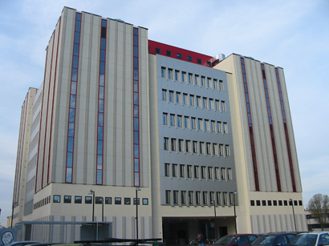
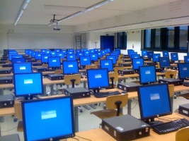

Strutture
Aule e strutture
Le lezioni del primo e secondo anno della laurea in Informatica hanno luogo nelle aule LUF1, P200, e nei laboratori informatici, presso l'edificio Paolotti. L'entrata studenti è in via Paolotti (angolo con via Belzoni) per l'aula P200. Le altre due aule si trovano in Via Luzzati (accanto all'edificio Paolotti). I laboratori informatici si trovano al piano terra dell'edificio Paolotti (entrata da Via Paolotti).
Le lezioni del terzo anno della Laurea in informatica e tutte quelle della laurea magistrale in Informatica hanno luogo presso la Torre Archimede.
Nota: a causa di lavori i laboratori informativi dell'edificio Paolotti saranno spostati al terzo piano. Saranno inserite maggiori informazioni non appena disponibili.
- Torre Archimede
- Sede del Dipartimento di Matematica Pura ed Applicata.
- Aule: 1C/150, 1BC/50, 1BC/45.
- Indirizzo: via Trieste 63, Padova
- Plesso Paolotti
- Aule: Luf1, P200.
- Indirizzo: via Belzoni 7, Padova.
Per maggiori indicazioni consulta la mappa [Google Maps].
Laboratori
Dal 14 Novembre 2006 l'aula informatica in Torre Archimede e' utilizzabile dagli studenti iscritti ai corsi di Matematica ed Informatica della Facolta' di Scienze MM.FF.NN.
Informazioni sull'uso dell'aula
- L'aula e' aperta dal Lunedi' al Venerdi' dalle 9.00 alle 18.00. Consulta gli orari aggiornati delle aule.
- Gli account per l'uso dell'aula sono gli stessi utilizzati per accedere alle aule informatiche gestite dal Dipartimento di Matematica Pura ed Applicata nell'edificio Paolotti
- Le quote stampa e le quote tempo sono le stesse delle altre aule ( p.e. con le quote di stampa standard di 40 pagina a settimana se stampate 30 pagine al Paolotti ne potrete stampare solo 10 in Torre Archimede )
- Le home directory del Paolotti e della Torre archimede sono invece separate ( Non troverete in Torre Archimede i file che trovate nelle vostre home al Paolotti ). Per trasferire file dal Paolotti alla torre archimede seguite queste istruzioni
Visualizza le informazioni sulle quote tempo dell'aula informatica.